<mat-sidenav-container class="sidenav-container">
  <mat-sidenav #drawer class="sidenav" [ngClass]="{hidden: !(isHandset$ | async)}" fixedInViewport
    [attr.role]="(isHandset$ | async) ? 'dialog' : 'navigation'" [mode]="(isHandset$ | async) ? 'over' : 'side'"
    [opened]="(isHandset$ | async) === false">
    <mat-toolbar color="primary" style="background-color: #3f51b5;">Menu</mat-toolbar>
    <mat-nav-list>
      <a mat-list-item href="#" (click)="drawer.close()">Inicio </a>
      <a mat-list-item href="#"(click)="drawer.close()">Canarios</a>
      <a mat-list-item href="#"(click)="drawer.close()">Parejas</a>
      <a mat-list-item href="#"(click)="drawer.close()">Estadisticas</a>
    </mat-nav-list>
  </mat-sidenav>
  <mat-sidenav-content>
    <mat-toolbar color="primary">
      <button type="button" aria-label="Toggle sidenav" mat-icon-button (click)="drawer.toggle()"
        *ngIf="isHandset$ | async">
        <mat-icon aria-label="Side nav toggle icon">menu</mat-icon>
      </button>
      <span>
        <mat-icon>
            
        </mat-icon>Mis Canarios
    </span>
     
      <a  *ngIf="!(isHandset$ | async)" class="centrar" [routerLink]="['home/inicio']" >Inicio </a>
      <a  *ngIf="!(isHandset$ | async)" class="centrar" [routerLink]="['canarios/listarCanarios']" >Canarios </a>
      <a  *ngIf="!(isHandset$ | async)" class="centrar" [routerLink]="['cria/listarTemporadas']" >Parejas </a>
      <a  *ngIf="!(isHandset$ | async)" class="centrar" [routerLink]="['/']" >Estadisticas </a>
      <span class="spacer"></span>
      <button mat-button [matMenuTriggerFor]="beforeMenu">
        <span class="material-icons">
          account_circle
          </span>
      </button>
      <mat-menu #beforeMenu="matMenu" xPosition="before">
        <button mat-menu-item>Ingresar</button>
        <button mat-menu-item>Registrarce</button>
        <button mat-menu-item>Perfil</button>
        <hr class="dropdown-divider">
        <button mat-menu-item>Salir</button>
      </mat-menu>
    </mat-toolbar>
     <!-- <ng-container>
      <router-outlet></router-outlet>
     </ng-container> -->
    <!-- Add Content Here -->
  </mat-sidenav-content>
</mat-sidenav-container>